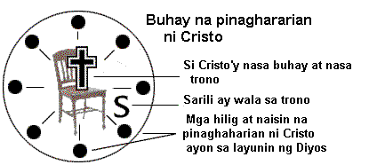

| Ang Biblia
ay nagsasabi na may tatlong uri ng tao.1.
ANG TAONG NATURAL
(Ang taong hindi pa tumatanggap kay Cristo). "Ang taong hindi pinananahanan ng Espiritu ay hindi tumatanggap ng
anuman mula sa Espiritu ng Dios pagkat kamangmangan lamang ito para sa kanya. At hindi
niya ito mauunawan pagkat ito ay inuunawa lamang sa pamamagitan ng Espiritu"(I
Corinto 2:14 NPV).
2. ANG TAONG
ESPIRITUWAL
(Ang taong nasa kapangyarihan at pamamahala ng Banal
na Espiritu). "Ang kahalagahan ng
bawa't bagay ay nauunawaan ng taong nagtataglay ng Espiritu, nguni't hindi siya nauunawan
ng iba" (I Corinto 2:15 NPV).

3. ANG TAONG
KARNAL
(Ang taong ito'y tumanggap na kay Cristo nguni't
talunan sa pamumuhay Cristiano sapagka't nagtitiwala sa kanyang sariling kalakasan).
"Mga kapatid, hindi ko kayo makausap tulad ng mga taong
espirituwal, kundi tulad ng mga makasanlibutan - mga sanggol kay Cristo. Gatas ang
ibinigay ko sa inyo noon pagkat hindi pa ninyo kaya ang matigas na pagkain. Hanggang
ngayon ay hindi pa ninyo ito kaya, pagkat namumuhay pa kayo ayon sa laman. Ang pagkakaroon
ninyo ng inggitan at alitan ay nagpapatunay lamang na makasanlibutan pa kayo at namumuhay
tulad ng karaniwang tao" (I Corinto 3:1-3 NPV).
| 1. NAGLAAN ANG DIOS PARA SA ATIN NG ISANG MASAGANA AT MABUNGANG BUHAY
CRISTIANO. |
(Si Cristo ang nagsasalita)
"...naparito Ako upang magkaroon sila ng buhay at ng lubos na kasaganaan nito"
(Juan 10:10 NPV).
"Ako ang puno ng ubas; kayo ang mga sanga. Kung ang isang tao'y nananatili sa Akin
at Ako'y sa kanya, magbubunga siya ng marami; pagkat kung hiwalay kayo sa Akin, wala
kayong magagawa" (Juan 15:5 NPV).
"Nguni't ang bunga ng Espiritu ay pag-ibig, kagalakan, kapayapaan, pagtitiis,
kagandahang-loob, kabutihan, katapatan, kahinahunan at pagpipigil sa sarili. Walang batas
laban sa mga bagay na ito" (Galacia 5:22,23 NPV).
"Nguni't tatanggap kayo ng kapangyarihan pagdating sa inyo ng Espiritu Santo; at
magiging saksi Ko kayo sa Jerusalem, sa buong Judea at Samaria, hanggang sa dulo ng
daigdig" (Gawa 1:8 NPV).
ANG TAONG ESPIRITUWAL -- Ilang pansariling katangian
na bunga ng pagtitiwala sa Dios.
Si Cristo ang naghahari
Nasa kapangyarihan ng Banal na Espiritu
Nagpapatotoo sa iba para kay Cristo
Matagumpay na buhay panalangin
Pagkaunawa ng Salita ng Dios
Nagtitiwala sa Dios
Masunurin sa Dios |
 |
Pag-ibig
Kagalakan
Kapayapaan
Katiyagaan
Kabutihan
Katapatan
Pagpipigil sa sarili |
Ang kapahayagan ng mga katangiang ito sa
buhay ng isang tao'y nakasalalay sa kanyang pagtitiwala at paglago sa pagkakilala kay
Cristo. Ang isang nagsisimula pa lamang makaunawa ng ministeryo ng Banal na Espiritu ay
hindi dapat panghinaan ng loob kung siya'y di-gaanong mabunga tulad sa malagong Cristiano
na nakaalam at naranasan na ang mga katotohanang ito nang higit na mahabang panahon.
Bakit kaya marami sa mga Cristiano ang
di-nakararanas ng masaganang buhay?
| 2. HINDI MARARANASAN NG CRISTIANONG KARNAL ANG MASAGANA AT MABUNGANG
BUHAY. |
Nagtitiwala ang taong karnal na ipamuhay ang
buhay Cristiano sa kanyang sariling kalakasan.
A. Maaaring di niya alam o nalimutan marahil ang pag-ibig,
pagpapatawad, at kapangyarihan ng Dios (Roma 5:8-10; Hebreo 10:1-25; I Juan 1; 2:1-3; II
Pedro 1:9; Gawa 1:8).
B. Pabagu-bago ang kanyang buhay-espirituwal.
K. Hindi niya maunawaan ang kanyang sarili - nais niyang gumawa ng
tama nguni't hindi niya magawa.
D. Nakakaligtaan niyang magpasakop sa kapangyarihan ng Banal na
Espiritu sa kanyang pamumuhay Cristiano (I Corinto 3:1-3; Roma 7:15-24; Galacia 5:16-18).
Ang Taong Karnal - Maaaring lahat o ilan sa sumusunod na katangian ang makikita sa
mga Cristianong hindi lubusang nagtitiwala sa Dios:
Hindi alam ang kanyang
manang Espirituwal
Kawalan ng pagtitiwala
Pagsuway
Pagkawala ng pag-ibig sa Dios at sa iba
Pagkasira ng loob
Tamad manalangin
Tamad mag-aral ng Biblia |

|
Ugaling palahatol
Maruming pag-iisip
Mapanibughuin
Makasalanan
Pagkabahala
Mapanuring Espiritu
Pagkabigo
Kawalan ng layunin
|
(Kailangang malaman ng isang taong
nagsasabing siya'y Cristiano subali't nagpapatuloy sa kasalanan, na maaaring hindi pa siya
tunay na Cristiano, ayon sa I Juan 2:3; 3:6-9; Efeso 5:5).
Ang tanging kalutasan ay nasa ikatlong katotohanan...
| 3.
IPINANGAKO NI JESUS ANG MASAGANA AT MABUNGANG
BUHAY NA BUNGA NG PAGIGING PUSPOS (NASA PAMAMAHALA AT KAPANGYARIHAN) NG BANAL NA ESPIRITU. |
Ang buhay na puspos ng Banal na Espiritu ay
ang buhay na pinamamahalaan ni Cristo, na sa pamamagitan Niya'y mayroon tayong
pagtatagumpay sa kapangyarihan ng Banal na Espiritu (Juan 15)
A. Nagiging Cristiano ang isang tao sa pamamagitan ng ministeryo ng Banal
na Espiritu, ayon sa Juan 3:1-8. Sa sandali ng espirituwal na kapanganakan, ang
Cristiano'y pinananahanan ng Banal na Espiritu sa lahat ng panahon (Juan 1:12; Colosas
2:9,10; Juan 14:16,17). Bagama't pinananahanan ng Banal na Espiritu ang lahat ng
Cristiano, hindi lahat ay puspos (nasa pamamahala at kapangyarihan) ng Banal na Espiritu.
B. Ang Banal na Espiritu ang pinagmumulan ng masaganang buhay (Juan 7:37,39).
K. Naparito ang Banal na Espiritu upang luwalhatiin si Cristo (Juan
16:1-15). Kung puspos ng Banal na Espiritu ang isang Cristiano, luluwalhatiin din niya si
Cristo.
D. Ipinangako ni Cristo ang kapangyarihan ng Banal na Espiritu bago
Siya umakyat sa langit upang maging mabisa tayong mga patotoo para sa Kanya (Gawa 1:1-9).
Paano tayo mapupuspos ng Banal Na Espiritu ang isang Cristiano?
| 4. NAPUPUSPOS (NASA PAMAMAHALA AT KAPANGYARIHAN) TAYO NG BANAL NA
ESPIRITU SA PAMAMAGITAN NG PANANAMPALATAYA; PAGKATAPOS AY MARARANASAN NATIN ANG MASAGANA
AT MABUNGANG BUHAY NA IPINANGAKO NI CRISTO SA BAWA'T CRISTIANO. |
Maaari mong angkinin ang kapuspusan ng Banal
na Espiritu ngayon din kung:
A. Banal na Espiritu (Mateo 5:6; Juan 7:37-39).
B. Isusuko ang pamamahala ng iyong buhay kay Cristo ayon sa utos ng Dios (Roma 12:1,2).
Sa pamamagitan ng pananampalataya, pasalamatan mo ang Dios na pinatawad na ang lahat ng
iyong kasalanan; nakaraan, kasalukuyan at hinaharap -- sapagka't namatay si Cristo para sa
iyo (Colosas 2:13-15; I Juan 1; 2:1-3; Hebreo 10:1-17).
K. Angkinin mo nang may pananampalataya ang kapuspusan ng Banal na Espiritu ayon sa:
1. KANYANG UTOS -- Mapuspos kayo ng Banal na
Espiritu. "Huwag kayong maglasing sa alak na naghahatid ng kaguluhan. Sa halip, ay
bayaan ninyong mapuspos kayo ng Espiritu" (Efeso 5:18 NPV).
2. KANYANG PANGAKO -- Tinutugon Niyang lagi
ang ating panalangin kung ito'y naaayon sa Kanyang kalooban. "Ito ang ating katiyakan
sa pagdulog natin sa Dios: ibibigay Niya sa atin ang anumang hingin nating naaayon sa
Kanyang kalooban. At yamang alam nating dinirinig Niya tayo, alam din nating ibinibigay
Niya ang anumang hingin natin sa Kanya" (I Juan 5:14,15 NPV).
Ang pananampalataya'y naipapahayag sa pamamagitan ng panalangin...
| PAANO MANANALANGIN SA
PANANAMPALATAYA UPANG MAPUSPOS NG BANAL NA ESPIRITUNapupuspos tayo ng Banal na Espiritu sa pamamagitan lamang ng pananampalataya.
Gayun pa man, ang tunay na panalangin ay isang paraan ng pagpapahayag ng iyong
pananampalataya. Narito ang mungkahing panalangin:
"Mahal na Ama, kailangan po Kita. Inaamin ko po na ako ang naghahari sa aking
buhay, at dahil dito, ako'y nagkasala sa Iyo. Salamat po at pinatawad Mo na ang aking mga
kasalanan sa pamamagitan ng kamatayan ni Cristo sa krus dahil sa akin. At ngayon nais ko
pong magharing muli si Cristo sa aking buhay. Puspusin Mo po ako ng Banal na Espiritu
tulad ng inutos Mong kami'y mangapuspos ng Espiritu at tulad ng Iyong ipinangako na Iyong
gagawin kung ako ay hihingi nang ayon sa Iyong kalooban. Hinihingi ko po ito sa pangalan
ni Jesus. Bilang kapahayagan ng aking pananampalataya, nagpapasalamat po ako ngayon sa
Iyong pamamahala sa aking buhay at sa pagpuspos Mo sa akin ng Iyong Banal na Espiritu.
Amen."
Ang panalangin bang ito ang nais ng iyong puso?|
Kung gayon nga, idalangin ito at magtiwala sa Dios na pupuspusin ka ng Banal na Espiritu
ngayon din.
PAANO MONG MALALAMAN
NA PUSPOS (NASA KAPANGYARIHAN AT PAMAMAHALA) KA NG BANAL NA ESPIRITU
Hiningi mo ba sa Dios na puspusin ka ng Banal na
Espiritu? Alam mo ba na puspos ka na ngayon ng Banal na Espiritu? Sa anong batayan? (Ang
katapatan ng Dios at ng Kanyang Salita ang katunayan - Hebreo 11:6; Roma 14:22,23).
Huwag kang umasa sa iyong pakiramdam. Ang pangako ng Salita ng Dios at hindi ang ating
pakiramdam ang ating batayan. Ang Cristiano ay nabubuhay sa pananampalataya (pagtitiwala)
sa Dios at sa Kanyang Salita. Ang trak ay naglalarawan ng kaugnayan ng katotohanan (Dios
at ang Kanyang Salita), pananampalataya (ang ating pagtitiwala sa Dios at sa Kanyang
Salita) at pakiramdam (ang bunga ng ating pananampalataya at pagsunod) (Juan 14:21).
Tatakbo ang trak kahit wala ang treyler. Subali't hindi ito
maaaring tumakbo kung treyler ang hihila. Katulad din nito, ang isang Cristiano na hindi
umaasa sa pakiramdam o emosyon, kundi ang pagtitiwala niya ay sa Dios at sa mga pangako ng
Kanyang Salita.
PAANO ANG MAMUHAY SA
KAPANGYARIHAN NG ESPIRITU
Ang pananampalataya (pagtitiwala sa Dios at sa
Kanyang Salita) lamang ang tanging paraan upang ang Cristiano'y makapamuhay na puspos ng
Banal na Espiritu. Habang patuloy kang nagtitiwala kay Cristo:
A. Ang iyong buhay ay kakikitaan ng dumaraming mga bunga ng Banal na Espiritu
(Galacia 5:22,23) at ang ugali mo'y unti-unting matutulad kay Cristo (Roma 12:2; II
Corinto 3:18).
B. Ang iyong buhay panalangin at pag-aaral ng Biblia ay magiging higit na
makahulugan.
K. Mararanasan mo ang Kanyang kapangyarihan sa pagpapatotoo Gawa 1:8).
D. Magiging handa ka sa espirituwal na pakikibaka laban sa sanlibutan (I Juan
2:15-17), sa pita ng laman (Galacia 5:16,17) at kay Satanas (I Pedro 5:7-9; Efeso
6:10-13).
E. Mararanasan mo ang Kanyang kapangyarihan upang labanan ang tukso at kasalanan
(I Corinto 10:13; Filipos 4:13; Efeso 1:19-23; 6:10; II Timoteo 1:7; Roma 6:1-16).
ANG PAGHINGANG
ESPIRITUWAL
Sa pamamagitan ng pananampalataya'y patuloy mong
mararanasan ang pag-ibig at pagpapatawad ng Dios.
Kung may mapansin kang isang bahagi sa iyong buhay (pag-iisip o kilos) na hindi
nakalulugod sa Panginoon, kahit na ikaw ay namumuhay at buong tapat na naglilingkod sa
Kanya, ipahayag at pasalamatan mo ang Dios na pinatawad na Niya ang iyong mga kasalanan -
nakaraan, kasalukuyan at hinaharap - batay sa kamatayan ni Cristo sa krus. Sa pamamagitan
ng pananampalataya'y angkinin mo ang Kanyang kapatawaran at pag-ibig at magpatuloy sa
pakikisama sa Kanya.
Kung muli mong agawin ang trono ng iyong buhay sa pamamagitan ng kasalanan - kaagad
gawin ang paghingang espirituwal.
Paghingang Espirituwal (paghingang palabas ng marumi at paghingang papasok ng malinis)
ay isang pagsasanay sa pananampalataya, upang patuloy mong maranasan ang pag-ibig at
pagpapatawad ng Dios.
Paghingang Palabas - Ipahayag mo ang iyong kasalanan - makipagkasundo ka sa Dios
sa nagawa mong kasalanan at pasalamatan Siya sa Kanyang pagpapatawad ayon sa I Juan 1:9 at
Hebreo 10:1-25. Iwan at kamuhian mo ang kasalanan ginawa.
Paghingang papasok - Isuko mo ang iyong kalooban kay Cristo at angkinin nang may
pananampalataya ang kapuspusan ng Banal na Espiritu. Magtiwala kang Siya na ngayon ang
namamahala at nagbibigay sa iyo ng kapangyarihan, ayon sa Kanyang utos sa Efeso 5:18 at sa
Kanyang pangako sa I Juan 5:14,15.
KUNG NAKATULONG SA
IYO ANG BABASAHING ITO, IBIGAY O IBAHAGI MO ITO SA IBANG TAO.
Milyun-milyong kopya ng babasahing ito,
"Naranasan mo na ba ang Mapuspos ng Banal na Espiritu?" ang naipamahagi na sa
buong daigdig sa iba't-ibang wika. Bunga nito, libu-libo nang Cristiano ang nakaunawa kung
paano patuloy na mapupuspos ng Banal na Espiritu. Kanilang nararanasan ang masaganang
buhay na ipinangako ni Cristo. Dahil dito lalo silang naging mabisa sa pagpapatotoo sa
ibang tao. Napatunayan na sa kanilang karanasan ang katotohanan ng utos ni Cristo na
maghintay sa kapuspusan ng Banal na Espiritu bago humayo upang ibahagi ang Kanyang
pag-ibig at pagpapatawad. Ang maibahagi si Cristo sa iba at makatulong sa pagtupad ng
"Dakilang Tagubilin" sa ating panahon ang kanilang hangarin.
WILLIAM R. BRIGHT, Pangulo ng Campus Crusade for Christ
Ninanais namin na higit na magamit ang babasahing ito; nguni't upang mapanatili ang uri
at maingatan ang nilalaman sa mga pagbabago, alinman sa aklat na ito, o bahagi man nito ay
hindi maaaring ipalimbag sa anumang paraan ng walang kapahintulutan ng Philippine Campus
Crusade for Christ, P.O. Box 458 Manila 1099. Setyembre 1993. |
|